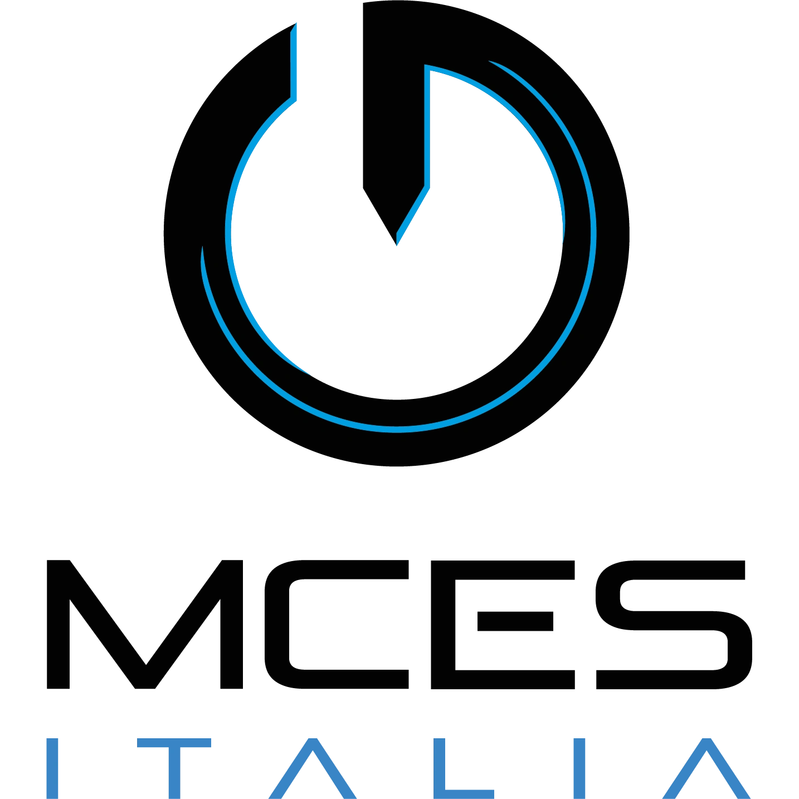
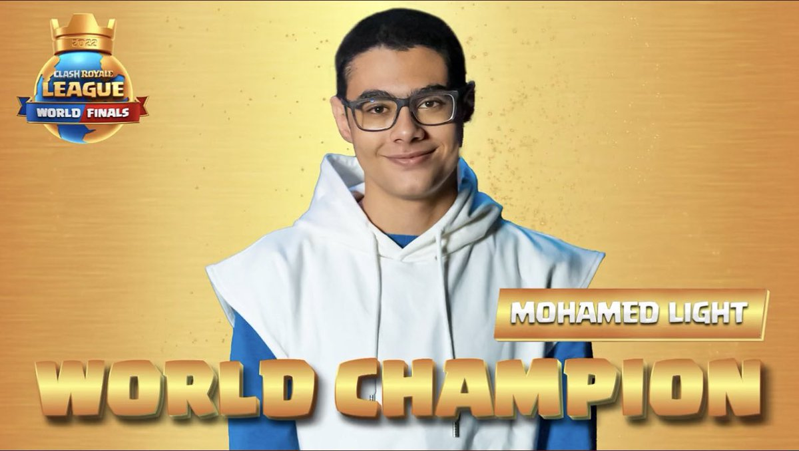
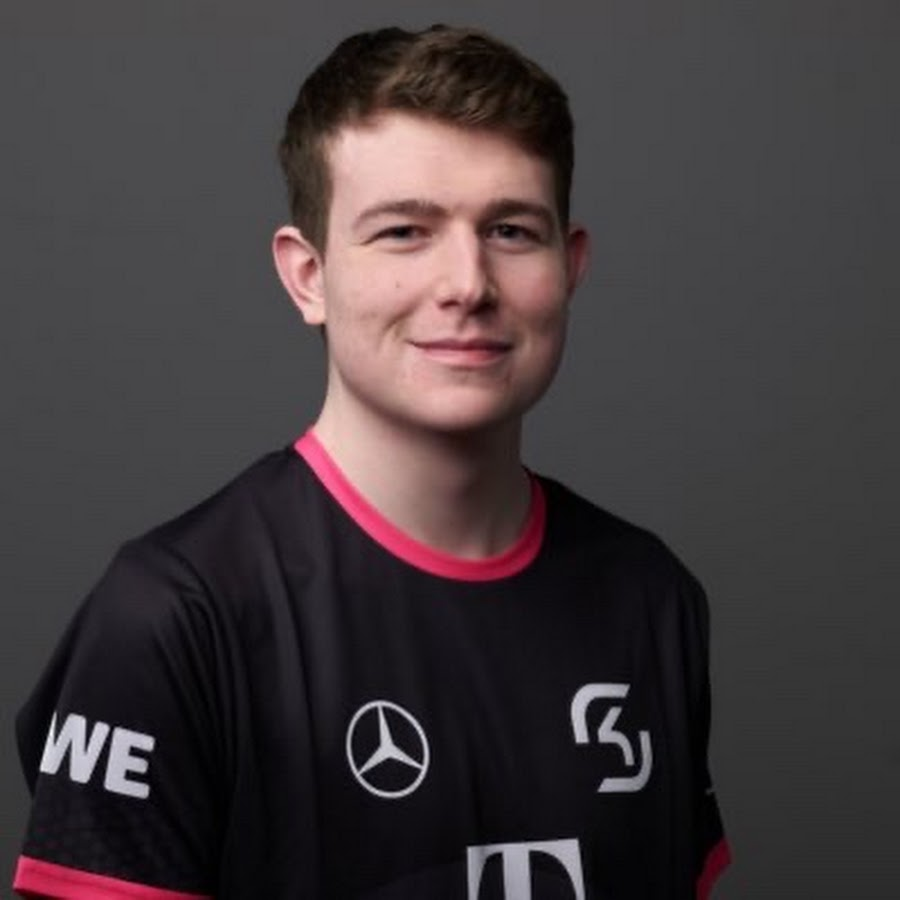
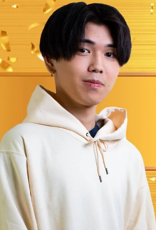
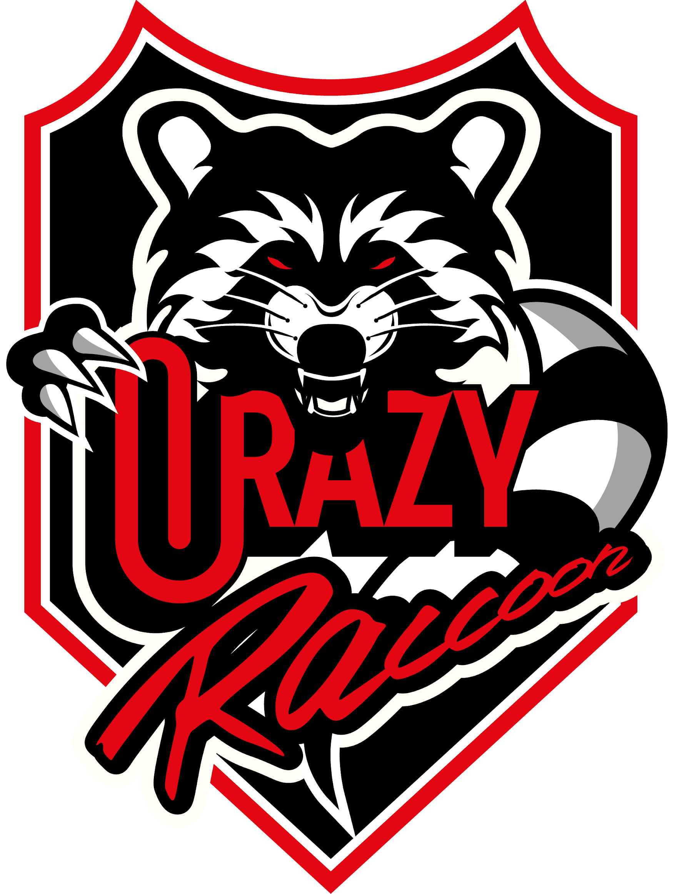

Bekende Spelers
Wie zijn nou de bekendere spelers van Clash Royale? Wie zijn er allemaal bekend in Nederland? Welke Clash Royale speler heeft het meeste geld gewonnen? Dat lees je allemaal hier.
Surgical Goblin
In Nederland is de bekendste Clash Royale speler ‘’Surgical Goblin’’ (Echte naam Frank Oskam) Frank is de bekendste en beste speler van heel Nederland, Hij heeft met zijn Clash Royale Carrière maar liefst $54.360 dollar gewonnen door het spelen van Clash Royale. Momenteel speelt Surgical Goblin voor het e-sports team genaamd Team Liquid. Hij is geboren op 15 December 1999 en hij is nu 23 jaar oud.
BobTheRock
Nog een bekende Nederlandse Speler is ‘’BobTheRock’’ (Echte naam Stijn Bruins) Stijn is de een na beste Nederlandse speler en hij heeft maar liefst $27.790 Dollar gewonnen met zijn Clash Royale Carrière. BobTheRock speelt op dit moment voor het e e-sports team genaamd MCES Italia Hij is geboren op 13 December 2003 en hij is nu 19 Jaar oud.
Mohamed Light
De beste speler op het moment is ‘’Mohamed Light’’ Echte naam Mohamed Tarek. Mohamed is een Egyptische Clash Royale speler die vorig jaar (2022) de CRL heeft gewonnen. Door deze winst van Mohamed heeft hij in totaal maar liefst $506.100 Dollar gewonnen. Dit is ook het meeste geld dat ooit iemand heeft gewonnen door het spelen van Clash Royale. Mohamed speelt momenteel niet in een e-sports team
Morten
Een bekende Duitse Speler staat bekend onder de naam ‘’Morten’’( Morten Mehmert) Morten is de beste Duitse Clash Royale speler met maar liefst $200.650 Dollar dat hij heeft gewonnen. Morten speelt momenteel voor het e-sports team genaamd SK Gaming. Hij werd vorig jaar (2022) 2de in de CRL. Hij verloor dus van Mohammed Light.
Mugi
Voor de laatste speler die wij behandelen kiezen wij een Japanner. Een bekende Japanse Speler staat bekend onder de naam ‘’Mugi” (Echte naam is niet bekend) Mugi heeft de CRL in 2021 gewonnen dit heeft hem in totaal US$ 305.550 dollar opgeleverd. Leuk feitje Mugi had in 2021 gewonnen van Mohamed light, daarom is Mugi kampioen geworden en Mohamed dus 2de in 2021. Mugi speelt momenteel voor het e-sports team Crazy Raccoon
 